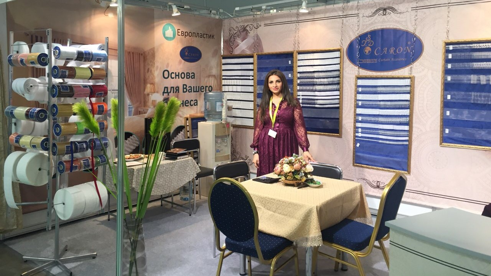

О компании
Надежный партнер уже более 15 лет!
История создания
История «Европластик» ООО начиналась тихо и скромно, когда на месте бывшей швейной фабрики был оборудован небольшой завод по производству только пластикового изделия — манекен (из полимерного сырья). Произошло это в 2002 году в городе Калязин Тверской области. В названии нашей компании неслучайно присутствует часть слова «ЕВРО» — то есть мы ориентируемся на европейский стандарт производства в целом и следовательно производство качественного товара. «Европластик» ООО — это малое предприятие, юридически оформленное как общество с ограниченной ответственностью. Производительность предприятия была подстать его размеру, но постепенно оно росло, и через 2 года в 2004 году завод стал производить больше ассортимента изделий из пластика — были уже разновидности изделий. Кроме манекен женских, мужских и детских, производились торговое и рекламное оборудование, разных размеров, моделей, цветов. Руководство тут же провело реконструкцию с увеличением мощности еще в 2 раза. Это было связано с ростом экономических показателей по всей стране. Активная торговля текстильной продукцией — одеждой — рождала высокий спрос на нашу продукцию. Через еще 2 года в 2006 году при малом заводе был построен новый цех по производству пластиковых потолочных шин — профиля и карнизной фурнитуры для штор. Это было одно из первых подобных образований в России.
Компания сегодня
Сегодня «Европластик» ООО — это стабильная компания, работа которой сконцентрирована на производстве и оптовой продаже пластиковой продукции. Мы ценим доверие своих покупателей, постоянно повышаем качество и совершенствуем технические возможности с учетом современных стандартов. За долгие годы работы мы зарекомендовала себя как надежный партнер и лучший поставщик запатентованной продукции. Наши товары имеют широкое применение в торговых точках, на рынке белья, вещевых магазинах. Манекены применяют в качестве лучшей демонстрации товаров, а так же для передачи модной формы, которую можно красиво преподнести только при помощи манекена. Наша компания предлагает своим покупателям продукцию высокого качества, сотрудники устанавливают индивидуальный подход к своему заказчику и оперативно решают любые вопросы по оптовой поставке нашей продукции. Мы предлагаем покупателям пластиковые изделия от производителя по самым приемлемым ценам. Это позволяет нашим партнерам успешно вести свой бизнес на территории России.